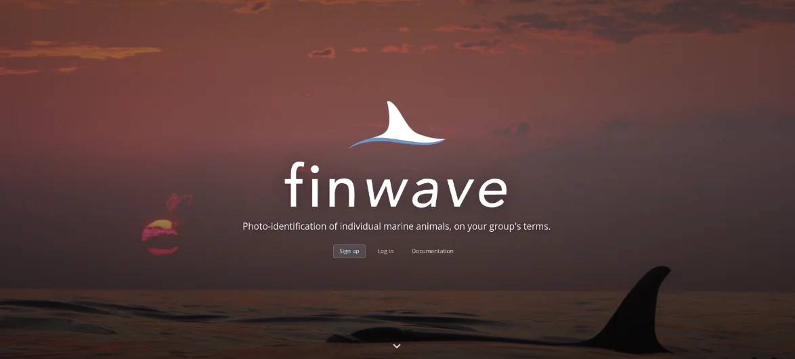

finwave
In productionPopulation-scale photo-identification workflows used by working biologists today. Individuals are recognised from dorsal-fin patterns and markings, with expert review in the loop and the model's confidence visible at every step.
- Role
- Architected and maintained by Operational Ecology
- Scale
- 1M+ images, used by international research groups